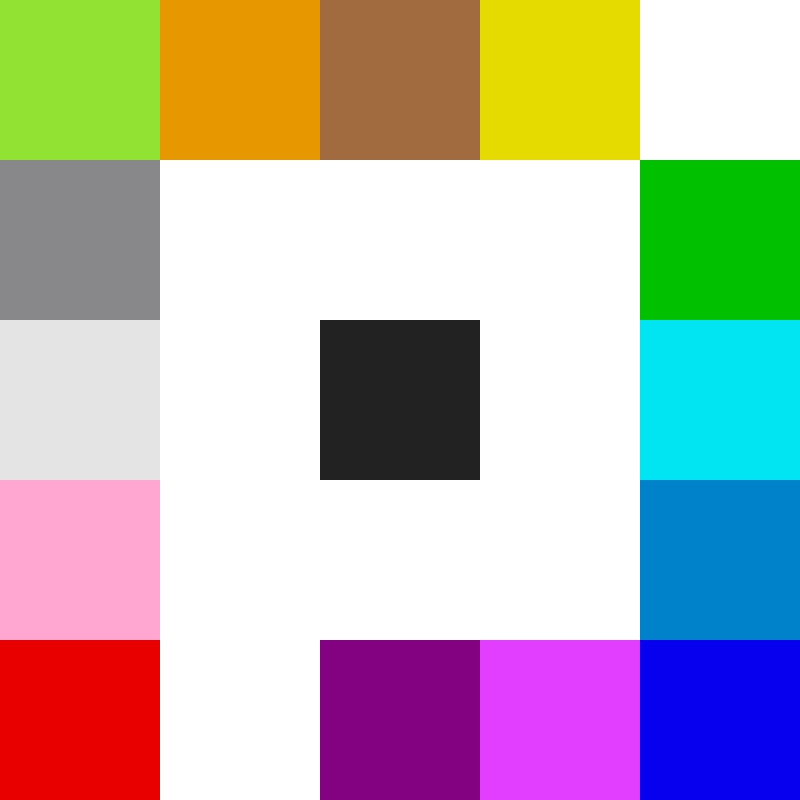
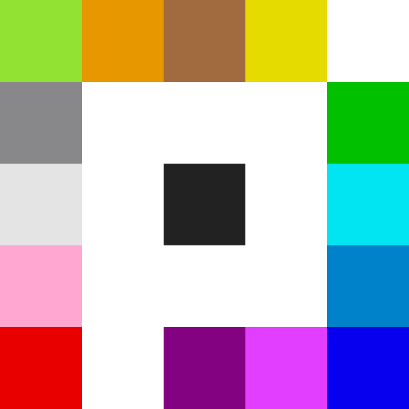
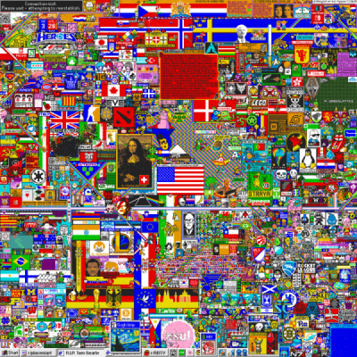

The early hours of the experiment were characterized by random pixel placement and chaotic attempts at image creation. Among the first distinct sections of the canvas to emerge was a corner of entirely blue pixels (named "Blue Corner") and a homage to Pokémon. As the canvas developed, some established subreddit communities, such as those for video games, sports teams and individual countries, coordinated their user efforts to claim and decorate particular sections. This frequently created conflict between communities competing for space on the canvas. Overall, thousands of communities were involved.
Other sections of the canvas were developed by communities and coordination efforts created specifically for the event. Several works of pixel art sprouted from the collaboration of these communities, such as fictional characters, Internet memes, flags, and recreations of famous pieces of artwork such as the Mona Lisa and The Starry Night. Several self-declared "cults" also formed to create and maintain various emblematic features such as the (black) void, the green lattice, the aforementioned blue corner, and a multi-colored "rainbow road". At the time of the experiment's end on 3 April 2017, over 90,000 users were viewing and editing the canvas, and over one million users had placed a total of approximately 16 million pixels. An analysis found that the final version of the 2017 experiment consisted of art from over 800 communities.
r/place was commended for its colorful representation of the Reddit online community. The A.V. Club called it "a benign, colorful way for Redditors to do what they do best: argue among each other about the things that they love". Gizmodo labelled it as a "testament to the internet's ability to collaborate". A number of commentators described the experiment as a broader representation of Internet culture. Some also commented on the apparent relationship between the makeup of the final canvas and the individual communities within Reddit, which exist independently but cooperate as part of a larger community. Newsweek called it "the internet's best experiment yet", and a writer at Ars Technica suggested that the cooperative spirit of r/place represented a model for fighting extremism in internet communities. The experiment did receive some criticism for the lack of protection from bot usage where users used scripts and macros to automatically draw on the canvas.